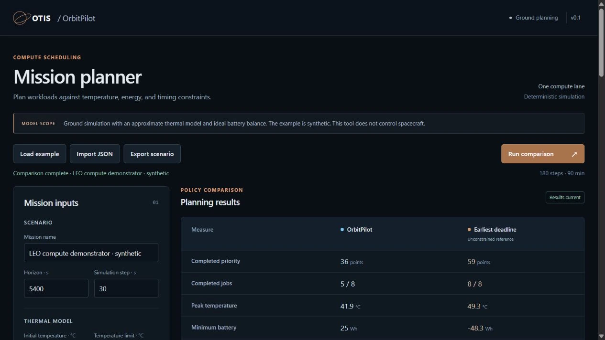
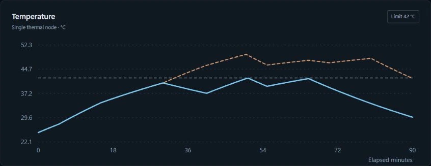
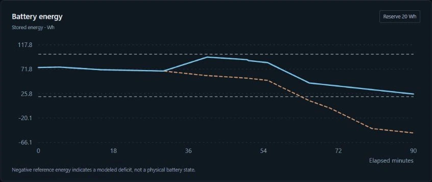
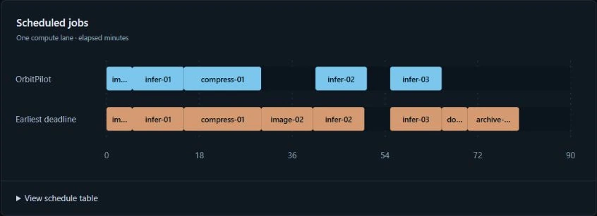

OrbitPilot
Plan spacecraft computing around thermal and power limits
Build a mission scenario, schedule computing tasks, and inspect predicted temperature and battery use before integration.

From mission inputs to a workload plan
Evaluate image processing, analysis, and other computing tasks whose timing can change within a mission window.
Define the mission
Set temperature limits, battery capacity and reserve, electrical generation, and thermal conditions for each operating phase.
Schedule the work
Give each task a release time, duration, deadline, power draw, heat load, and priority. OrbitPilot evaluates when it can run within the modeled limits.
Compare plans
Compare OrbitPilot with an unconstrained earliest-deadline reference using the same mission inputs and physical model. Review completed tasks, peak temperature, battery reserve, and energy use.
Inspect the decisions
Follow the workload timeline and resource traces. See which tasks remain unscheduled, why they were excluded, and where a modeled resource limit is exceeded.
Keep the results
Import and export mission scenarios as JSON. Save full comparison results as JSON or export time-series traces as CSV for further analysis.
See the plan and its limits
Screenshots from OrbitPilot v0.1 running a synthetic mission. The example illustrates the software, not measured spacecraft performance.



Use it in your existing workflow
The same planning model is available through the interface and programmatic tools.
- Browser interface. Edit scenarios, run comparisons, and inspect results through a local OrbitPilot server.
- Windows application. A bundled launcher includes the runtime and opens the planner in your browser.
- Command line. Validate scenarios and run simulations or comparisons in batch workflows.
- Python SDK. Call the planner directly from Python applications and analysis tools.
- REST API. Submit the same mission scenarios over HTTP and receive structured JSON results.
- Container configuration. A supplied Docker configuration supports evaluating managed deployments.
The installed application runs locally without a cloud account. Windows is verified; macOS, Linux, and container execution remain pending validation.
Built for ground evaluation
Current release: v0.1
OrbitPilot currently models one compute lane, one thermal node, and one battery. Tasks run at fixed power without overlap or interruption. Environment conditions are supplied by the user.
The release is a working planning prototype. Its simplified thermal and electrical models need spacecraft-specific calibration. Onboard control, hardware interfaces, and flight qualification remain future work.
We are seeking mission and payload teams with computing workloads to evaluate. Share your task profiles, operating limits, and mission conditions to help define a relevant test case.
Related products
See OrbitPilot with our team
Walk through the planner and discuss your mission requirements.